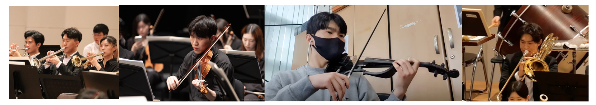

Integrated M.S./Ph.D. Program, Department of Intelligence and Information; Music and Audio Research Group (MARG)
March 2025 - Present
B.S., Department of Computer Science and Engineering
March 2018 - August 2024
Interspeech 2026, accepted paper
Dongyub Han, Injune Hwang, Jaejun Lee, Jiwon Lee, and Kyogu Lee
EMG-to-speech synthesis, speech/audio representation learning, Music Information Retrieval, symbolic music generation
| Type | Strong | Experienced |
|---|---|---|
| Languages | Python, TypeScript, C | Java, C++ |
| ML/DL | PyTorch, Hugging Face | TensorFlow |
| Speech/Audio | EMG-to-speech synthesis, audio representation learning | |
| Music AI | Symbolic music generation, Music Information Retrieval | |
| FrontEnd | React, Redux, Jest | |
| BackEnd | Django | |
| DevOps | AWS, GitHub Actions |
2025-03 ~ Present
2024-03 ~ 2024-06
2023-09 ~ 2023-11
2021-09 ~ 2022-08